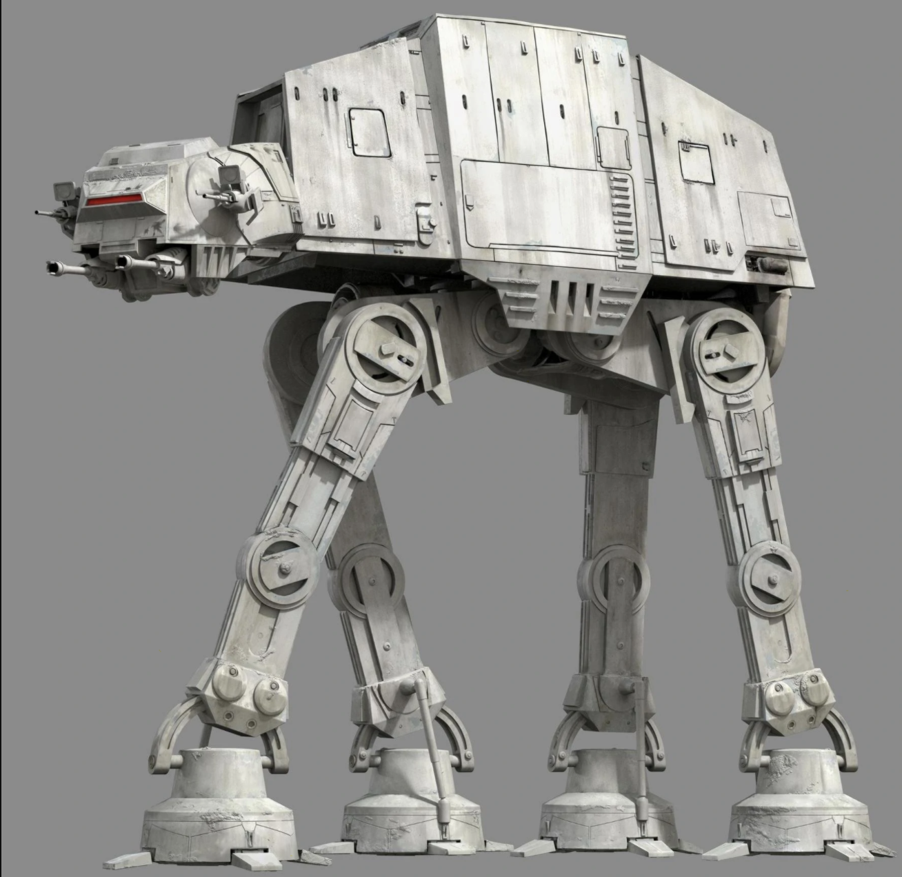
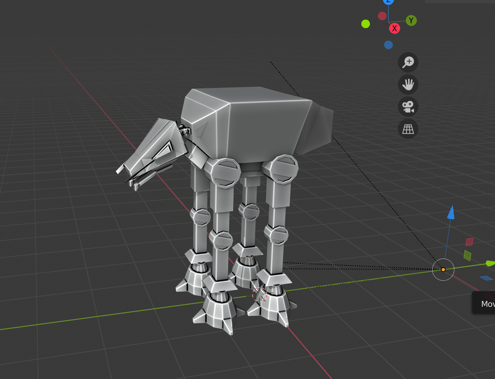
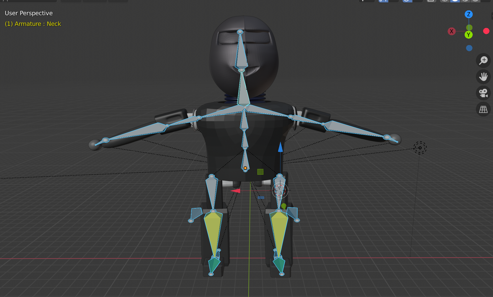

Something that each one of our team members had in common was that we all wanted to take CS184 because we wanted to learn how to create video games and learn the technology behind them. That was the main reason why we decided to try and create a video game for our final project for this class. What we created is a 2D animated game for which you can move around freely, jump, and shoot. Our game only has two robot characters which were inspired from Star Wars. The two robots were created and animated using Blender while the game was created in Unity. In order to accomplish this project we had to learn how to use Blender and create characters from shapes. In addition, we also had to learn how to create a skeleton body, and how to connect the joints so that our kinematics worked on our robot and made him move in a realistic way. Furthermore, we also had to animate the walk that our robot implemented. We then went on to implement the inverse kinematics that our robot would implement. We made sure that our robot would follow our mouse with its head and arm while allowing our robot to shoot in the direction that we wanted using kinematics. Lasty, we implemented a background and scenery for our game.
In the beginning, starting this project was a very daunting task. None of our team members had ever done a project like this and we knew very little about the tools we could use. Our first approach was to learn what tools exist that could help us create and animate a video game. After some research we learned that Unity was the platform we needed to use to create a video game. We then learned that we could create our animated robot through many different programs such as Maya, Natron, Sculptris and many more. However, we decided to use Blender partly because of the huge community that contributes to it. We figured that if we needed to debug something there would be more support for Blender than the others. After we figured out which technologies we were going to use, the next step was to start using them. We started off by first creating the robots for our game. At first, we did not know how to use Blender but after reading some of the commands we quickly started picking up how to add detail to the characters. In order to create the robots, we looked at images from google of robots to be inspired. We actually based our creations from some of the robots from Star Wars. The images below shows a side by side comparison of one of the robots that we created and what we based it off of.
|

|

|
|

|
The biggest problem we had was that at first we wanted to work on a different project. We wanted to improve the graphics of an old video game such as Left 4 dead and also add mods to it. After receiving feedback from our TA we decided that it would be best to work on a more doable project. This set us back a few weeks since we had to essentially start over. A problem we encountered when actually working on the current project was that when using Blender some of our members did not have a mouse to use, so they had to use there laptop touchpad. This was a problem because Blender has a lot of shortcuts when using an actual mouse, so learning how to use Blender without a touchpad was very hard. Another problem we had was implementing the skeleton correctly. In the beginning, our skeleton did not work because we did not connect the correct joints together, but after many tries we were able to create a skeleton that behaved like we wanted it too.
Working on this project taught us so much about animation and game development. We now know how to develop characters and animate them so that they move in a realistic way. We learned that animation is basically an optical illusion because we present the user with a sequence of still images right after another, so that the user can see them as a continuous moving image. This has taught us how to create smooth and lifelike animations. Essentially we just have to create enough frames to depict the character as moving. We also learned the importance of creating a good skeleton for our animations because without a skeleton the character cannot move.